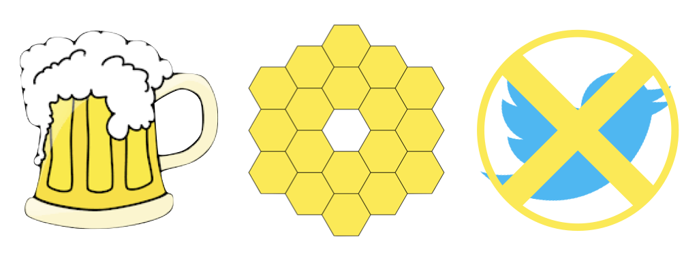
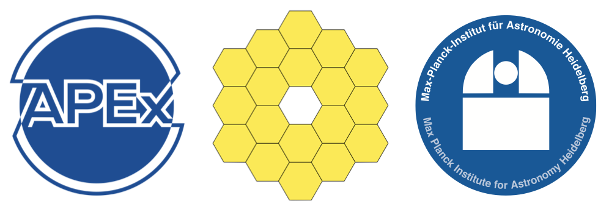

7-11 November 2022
Ringberg Castle, Bavaria, Germany
Ringberg Castle, Bavaria, Germany
Celebrating JWST's first six months of exoplanet data

After decades of waiting, JWST observations of exoplanets are finally upon us! To celebrate this exciting time, we will convene for a week at Ringberg Castle. The goal of the workshop is to bring together world experts on transiting planets, directly imaged planets, and brown dwarfs to discuss early JWST results and instrument performance, and brainstorm innovations in data analysis and atmospheric modeling needed to make the most of this once-in-a-generation telescope. We strongly encourage participants to share early results — even if they are very preliminary — to accelerate our understanding of exoplanet atmospheres and instrument performance in advance of the Cycle 2 deadline. To encourage open communication, we request that participants agree that any JWST result shared at the workshop is a private communication, and may only be used with permission.

SOC & LOC
Participation is by invitation only.
Any provided personal data are processed in accordance with the Max Planck Institute for Astronomy privacy policy.
| Lili Alderson | Aarynn Carter | Anjali Piette | Björn Benneke | Cyril Gapp | Dana Louie |
| Diana Powell | Drake Deming | Duncan Christie | Elisabeth Matthews | Elspeth Lee | Eva-Maria Ahrer |
| Everett Schlawin | Evert Nasedkin | Ian Crossfield | Ian Dobbs-Dixon | Jake Taylor | Jasmina Blecic |
| Jeroen Bouwman | Jonathan Fortney | Lagage Pierre-Olivier | Laura Kreidberg | Lisa Dang | Lorena Acuña |
| Luis Welbanks | Maria Steinrueck | Maria Zamyatina | Nathan Mayne | Nestor Espinoza | Niall Whiteford |
| Nicolas Cowan | Nicolas Crouzet | Nikole Lewis | Olivia Venot | Patricio E. Cubillos | Paul Mollière |
| Sebastian Zieba | Taylor James Bell | Thaddeus Komacek | Thomas Beatty | Tom Evans | Vivien Parmentier |
| Yamila Miguel | Yannis Argyriou | Zafar Rustamkulov | Tiffany Kataria | Beth Biller | Ryan MacDonald |
| Sasha Hinkley |